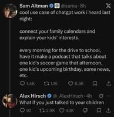
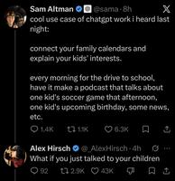
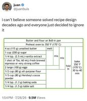

An anonymous reader quotes a report from Ars Technica: We are a month away from the initial rollout of Google's Android developer verification system, and the company contends this policy does not impinge on the platform's open nature. Still, the restrictions will be a big change, and there are still some unanswered questions. An issue that has come up repeatedly in the run-up to verification is what will happen to devs who can't verify because of where they live. It turns out that Google has a cryptic answer for that buried in an FAQ. Developer verification will soon block the installation of apps from unverified developers on any Android device running Google services, which is functionally all Android phones outside Russia and China. Developers who want to keep releasing software, even if it's not in the Play Store, have to provide Google with their ID and pay a small fee.
But what if you're an Android developer living in a sanctioned nation? Currently, the U.S. sanction list includes Iran, Cuba, North Korea, and occupied areas of Ukraine. Given the current uncertain state of US foreign policy, that list could change in the future. Google doing any business with developers in those places is a thorny issue, and it seems like the company has decided to just leave them hanging. A rather lengthy FAQ a few levels deep on the Google developer site addresses various issues around dev verification. Smack in the middle is this: "How does this program impact developers in sanctioned countries? Devices in sanctioned countries will be excluded from Android developer verification checks. This allows any developer to continue distributing apps in these regions without verification, though users there won't benefit from the enhanced security benefits of the program."
[...] A Google spokesperson has expanded on the FAQ and confirmed to Ars that people living in sanctioned nations will not be allowed to go through the verification process. That means they will not be able to effectively distribute software through any channel internationally. Today, someone making an app in, say, Cuba can distribute it freely around the world, as well as at home. Anyone can install it and see their work in action after tapping through a few sideloading alerts. In the coming months, that will no longer be the case. These unverified apps will only be easily installable in the sanctioned countries where verification doesn't exist.
Read more of this story at Slashdot.
The U.S. company Meteomatics has created an automated weather-monitoring system that uses drones to collect atmospheric data at multiple altitudes before returning to recharge and upload their findings. The so-called Meteobase, which consists of a base station on the ground with a drone that can be launched and recovered automatically, "is highly weather resistant and keeps the drone at a comfortable temperature," reports The Guardian. "It can send out one data-gathering mission a day, or multiple flights to monitor fog, icing, an advancing weather front, or other fast-changing conditions." The report says the reusable drones could offer a cheaper, more controllable alternative to helium weather balloons, especially for tracking rapidly changing conditions.
Read more of this story at Slashdot.
An anonymous reader quotes a report from Reuters: OpenAI has discovered other instances in which autonomous agents have escaped containment as the company expands its investigation of the hacking incident at tech firm Hugging Face that drew global attention this month, two people familiar with the matter said on Friday. The new breakouts were uncovered during the company's publicly announced investigation into how one of its agents escaped what was meant to be a contained testing environment this month, the two people said, and OpenAI is now looking into those instances as well. One of the sources said that the escapes were limited in nature and that none of the agents were thought to have left OpenAI's network.
An OpenAI spokesperson referred to a statement issued by the company on Tuesday that said it was reviewing "broader activity from our models" in addition to the Hugging Face intrusion. The discovery of additional rogue behavior at OpenAI, even if limited in nature, could feed growing appetite for regulation coming out of the White House and elsewhere. The expanded investigation by OpenAI was launched shortly before its primary rival, Anthropic, disclosed that its models were also responsible for a series of break-ins that led to breaches at three other companies dating back to April, according to the two sources and a third source familiar with the matter. The recent discovery of other past breakouts at OpenAI has not previously been reported.
AI safety experts said the new disclosures paint a portrait of a group of cutting-edge labs whose ability to develop dangerous autonomous hacking agents outstrips their ability to keep them under control. "We have a whole industry where the people designing, developing and putting out these tools aren't keeping up themselves to responsibly develop these things and keep them safe," said Maurice Chiodo, a mathematician who works at Cambridge University's Center for the Study of Existential Risk. Reuters could not establish exactly how many incidents OpenAI investigators found or the timings or circumstances under which they occurred. The three sources said OpenAI and outside experts were examining log data from earlier in the year in a bid to understand what took place.
Read more of this story at Slashdot.
More than 81% of Australian children ages 10 to 15 were still using social media three months after the country's under-16 ban took effect, with roughly half saying platforms never checked their age. Reuters reports: In a study published on Friday, eSafety also found most children aged between 10 and 15 were using social media just as frequently in March as they had before the ban came into force on December 10 last year, while parental awareness of their habits decreased. Children's continued social media use took place even as account ownership declined to 42% from 52%, with "statistically significant" reductions across YouTube, Snapchat and TikTok in particular, the report said.
"Most under-16s who had social media accounts before commencement were able to either retain them or create new ones at the three-month mark, with social media platforms' failure to implement effective age assurance measures cited as the main reason," eSafety said in a statement [...] Before the ban, nearly 86% of children surveyed reported using at least one age-restricted platform. Three months later, that figure remained above 81%, the report said. About 58% of teenagers reported using social media daily or more often, barely down from roughly 60% before the ban, it found. The report showed minimal change in "sports and physical activity, arts and music, spending time with friends and family, and attendance at community events."
Around half the children who retained their accounts said platforms had not checked their age, the most common reason they were able to stay on the services. Others said their accounts listed them as aged 16 or older or that age-checking systems had incorrectly determined they were older. The findings broadly matched snapshot data eSafety published in late March.
Read more of this story at Slashdot.
Sony says it will proceed with ending PlayStation disc sales in January 2028 despite petitions, boycott threats, and concerns about digital ownership and the disappearance of the secondhand market. PCMag reports: After Sony's recent earnings call, an investor Q&A session saw analysts ask about its controversial decision to end disc production across all of its consoles. The company hadn't publicly commented since its announcement and had reduced activity on social accounts and other marketing channels. Sony's chief financial officer, Lin Tao, broke that silence during the Q&A. "There are various reasons we made this decision," she said through an interpreter. "The biggest being that the digitalization of content overall has been progressing. That's the big factor. It's not just for PlayStation, but for all kinds of content, digitalization is progressing. "And so when we think about the future, and we put in a lot of thought and time, and we cautiously considered this, and we came to this conclusion, and we're going to cautiously move this forward," Tao said.
"We have received various opinions, and people have strong views, and we understand that the community has put forth those views to us," said Tao. [...] Tao says Sony wants to "consider" the emotions of disgruntled customers, especially as titles are "connected to people's fond memories in many cases." Tao also alluded to the possibility of future measures to lessen the blow for anyone unhappy with the decision, but it appears Sony hasn't yet finalized what those may be. "In the future digital ecosystem, how do we engage the gamers is something that we would like to continue to explore," she said.
Read more of this story at Slashdot.
An anonymous reader quotes a report from NBC News: Cyberattacks targeting municipal water systems have been reported in at least seven states this week, prompting the FBI and the Environmental Protection Agency to warn utilities nationwide that hackers are trying to disrupt critical water infrastructure. In a public service announcement Thursday, the agencies said water and wastewater utilities have reported incidents to the FBI, with some malicious activity degrading water operations. The announcement does not name the states.
The warning comes after hackers targeted more than 30 municipal water facilities in Minnesota in an attack that had hallmarks of Iranian meddling, according to a law enforcement official. It is still under investigation. A spokesperson for Minnesota's information technology services agency said Thursday there was no indication the breaches contaminated any municipal water supplies. The federal Cybersecurity and Infrastructure Security Agency said in a separate alert that some larger attacks on water infrastructure had "resulted in boil water notices and sustained manual operations," though it did not say where.
[...] The federal advisory said the malicious cyber actors, or MCAs, targeted specific brands of control systems used by municipal water utilities, though the FBI and the EPA urged operators of all systems to take precautions. [...] The agencies said the hackers remotely accessed internet-facing devices, changed IP addresses and passwords, and caused utilities to lose monitoring and control capabilities. The federal advisory calls on system operators to remove programmable logical controllers, or PLCs, from direct internet exposure by putting them behind secure gateways and firewalls; use strong passwords; and limit communications between authorized control system devices through access control lists.
Read more of this story at Slashdot.
Google has integrated its Nano Banana 2 image generator into Google Earth, allowing users to place AI-generated events and objects onto real satellite imagery. The company says its AI-generated images contain invisible watermarks detectable through Gemini or Lens, but the BBC found those safeguards and some third-party detection tools can be fooled into labeling manipulated Google Earth images as real. From the report: A collapsed Eiffel Tower, a sinkhole swallowing the Great Pyramid of Giza and Russian tanks in Ukraine's capital were among the images BBC Verify was able to create when testing the feature, which was rolled out on Thursday. Google has not yet responded to questions based on BBC Verify's tests, but in a social media post the company said they "take misinformation seriously" and that "we prevent image creation on harmful topics and are continually updating our protections."
AI and misinformation expert Henk van Ess has highlighted the risks this feature poses, creating fake images of a non-existent nuclear power plant in Iran, a refugee camp on the US-Mexico border and a fake hospital in Gaza with a bomb crater next to it. He said Google was allowing "invented" imagery to be "welded to genuine coordinates, drawn on genuine imagery." "The forgery does not have to look convincing on its own. It inherits the credibility of the map it was born on," van Ess added. UPDATE 7/31/26 10:54 AM: Google is rolling back the image generation inside of Google Earth: "We know that people uniquely trust Google Earth for a reliable view of the world. We've seen geospatial professionals using this feature for a range of useful purposes, however we've also seen people sharing screenshots of generated imagery that appear to violate our policies. So we're rolling back this feature in Google Earth while we work on implementing stronger guardrails. It's important to note that generated images didn't appear in the main Google Earth experience for others to see and were watermarked as AI generated."
Read more of this story at Slashdot.
alternative_right shares a report from Axios: Google has basically stopped sending people to websites (including our site) for answers and information. Instead, it's using AI to answer them on its platform, in its words. Chartbeat data shared with Axios shows Google Search traffic to publishers fell 34% over the past year. That pain is regressive. Over the past two years, small publishers lost 60% of referrals from search overall, medium publishers 47%, large publishers 22%.
Read more of this story at Slashdot.
New York has sued prediction-market platform Kalshi, alleging it operates an "illegal gambling operation" without state authorization. "No matter what they call themselves, prediction markets like Kalshi are gambling platforms, plain and simple," said New York Attorney General Letitia James in a press release announcing the lawsuit. "By ignoring our laws, Kalshi is running an illegal operation and harming New Yorkers in the process." CNBC reports: In a case filed in a Manhattan state court (PDF), the lawsuit claims that Kalshi accepts wagers as a gambling business in disregard for the state's constitution and laws by not being registered with the New York State Gaming Commission. Governor Kathy Hochul in the press release said the state is taking the action to stop what it views as illegal behavior and bring the company into compliance with New York law. The lawsuit is seeking a permanent injunction against Kalshi.
The suit by the state is also seeking a total restitution to users who have placed trades on the platform, a $100,000 penalty for each attempt to offer sports wagering, and another penalty three times the amount the company has gained while allegedly operating in violation of New York law. The state estimates that could total $36 billion.
Read more of this story at Slashdot.
Google says AI-assisted workflows helped Chrome fix 1,072 security bugs across versions 149 and 150, more than the previous 23 releases combined. The company is also testing twice-weekly security updates and "dynamic patching," which could apply most fixes without requiring users to restart the entire browser. "By leveraging Chrome's multi-process architecture, dynamic patching sequentially replaces background child processes (like the Renderer and GPU) with updated binaries on the fly," says Google in a blog post. PiunikaWeb reports: Alongside dynamic patching, Google is rolling out smarter background updates during periods of minimal user disruption. Starting with Chrome 150 on macOS, the browser takes advantage of the operating system's windowless state. If all Chrome windows are closed but the app remains running in the background, the browser will quietly auto-restart to apply pending updates.
For enterprise environments, IT admins can continue to manage fleet-wide deployments through Chrome Enterprise Core or enforce update prompts using the RelaunchNotification policy. Google's long-term vision is a browser that remains continuously protected in the background without interrupting your daily browsing session. In the meantime, you can manually trigger pending updates by clicking the update prompt in the top-right corner of Chrome.
Read more of this story at Slashdot.
An anonymous reader quotes a report from 404 Media: LinkedIn, a social network awash with long AI-generated posts from executives and other corporate workers, has introduced a new button that users can click to flag if a post "seems like AI slop," according to 404 Media's own tests. If you have been anywhere near LinkedIn in the past couple of years, you have undoubtedly seen users posting blatantly AI-generated missives. Often these posts take some sort of news event, and opine on how this relates to thought leadership, or some other LinkedIn brainrot term. It's also pretty wild the button specifically uses the term "AI slop" and not, say, "It seems this was generated with AI."
[...] After publication of this piece, Hari Srinivasan, chief product officer at LinkedIn, wrote their own post about the button. "AI slop is a top priority for all of us. We really care about this. People come to LinkedIn to connect with real people and share their real perspectives, ideas and expertise. Here are a few more changes to keep it that way," he wrote.
The button in part will help LinkedIn tune its own models for identifying AI slop. "We are ramping up a series of new and improved classifiers that identify if a post is AI-slop or generally low-quality content. This will reduce the amount of AI slop you might see in suggested content and content from outside your network," the post said. "We are ramping the ability for members to tell us if they believe a post or comment seems like AI slop. Slop is hard to define and the definition changes; this lets us tune our models and make better feeds." Srinivasan also said LinkedIn is removing the AI-powered "enhance your post" feature with another that "proofreads your words, but does not change your voice."
Read more of this story at Slashdot.
A production company and filmmaker are suing Netflix for $105 million, alleging the streamer lost a stolen drive containing an unencrypted master copy of the unreleased Nicolas Cage film Fortitude, which they claim damage its exclusivity and market value. Netflix denied responsibility for the lost film but said it takes content security seriously and has offered to monitor piracy sites for unauthorized copies. CBS News reports: The complaint filed on Wednesday in California district court alleges that the film's associate producer, Daniel Haido, hand-delivered an unencrypted master copy of the film to Netflix so the company could screen it as a potential buyer. Haido verbally instructed the employee to delete the files after the screening, according to the suit. A little over a week after the screening, Netflix emailed the filmmakers to say the drive had been stolen, the plaintiffs allege. "Someone stole a good amount of drives from our office desks this past week," a Netflix executive wrote in the email, according to the suit.
The complaint notes the movie, entitled "Fortitude," took over seven years to make and cost $45 million. It tells the story of a secret mission called Operation Fortitude during World War II that was orchestrated to mislead the Nazis about the Allied invasion of Europe. The film stars Nicolas Cage as Dusko Popov, a real-life spy during World War II, as well as Sir Ben Kingsley and Ron Perlman.
The plaintiffs said studios will now be dissuaded from buying the rights to the movie, knowing that a version of it could be released by a third party for free. "The film's value depended in significant part on its exclusivity as an unreleased, first-to-market work," the complaint states. "By losing control of the film, Netflix destroyed that exclusivity and materially, if not completely, impaired the film's marketability."
Read more of this story at Slashdot.
Electric vehicles have historically been "notorious" for losing their resale value, reports CNBC. But this year prices for used EVs in the U.S. "are up 5.1% from January to June 2026, according to a Recurrent analysis published this month."
The trend continued into the second half of the year: Prices are up 7% year to date through mid-July, it said. Recurrent compared EVs according to the same make and model year across 108 combinations and weighted price growth according to inventory volume. "Used EVs are appreciating, which almost never happens," according to an e-mailed Recurrent statement about the analysis. Other auto analysts found a similar trend...
Price growth for used EVs has been broad-based, said Stephanie Valdez Streaty, the director of industry insights at Cox Automotive, a market research firm. Twenty-one of the 25 used EV models with the highest sales volume increased in price between January and June this year, she said... [T]he price growth for used EVs this year has been all the more surprising because it has happened despite a high supply of used EVs hitting the market — which, all else being equal, would generally cause prices to fall, experts said...
There are several factors juicing consumer demand for used EVs, experts said. Among them are high gasoline prices due to the Iran war, which have pushed more consumers to consider fuel-efficient options, experts said... Overall affordability is another big factor, against a backdrop of inflation that has remained above policymakers' target of 2% for five or so years, auto experts said. The dynamic has pushed more consumers toward the used car market more broadly.
Two interesting statistics from the article:
"Used EV sales were up 20% in June versus a year earlier, while sales of new EVs were down about 28%, according to Cox Automotive data."
New EVs accounted for 5.4% of total new-vehicle sales in June, while the market share for used EVs was just 2.4%, according to Cox Automotive data.
Read more of this story at Slashdot.
"Space.com and The Guardian are reporting that the Falcon 9 upper stage leftover from the launch of the Firefly Blue Ghost-1 lander on Jan. 15, 2025 is due to impact the Moon on Aug. 5, 2026," writes longtime Slashdot reader fahrbot-bot. From a report: Onboard the same flight was the Hakuto-R Mission 2, called Resilience, a robotic lunar lander developed by the Japanese company ispace. According to a new study by an international team, the resulting impact plume may briefly be bright enough to see against the dark sky near the moon's edge. That means it might be visible to moongazers with sufficiently sensitive telescopes. This head-on collision of the errant stage is expected to occur near the Einstein and Bell craters near the western lunar limb. It may well be visible to ground and space-based assets.
Using special physics simulations to model the impact, William Jo, a graduate research assistant at the University of Texas, Austin and colleagues predict the debris plume from the impact will have the central ejecta spike reaching roughly 47 miles to over 60 miles (75 kilometers to 100 kilometers) altitude. "Our calculations suggest the plume should be several orders of magnitude brighter than the dark-sky background for the first few minutes after impact," Jo told Space.com. "So the plume should be visible, though I'd stress this is a single nominal case. The real one will look different, and the numbers are on the optimistic side. But the point worth making is that the flash isn't really the story here." Jo emphasized that there's great slam-dunk science to be had. "Watching this one gives us a rare chance to open up ejecta-plume science and calibrate those models against a real event, which matters for every future thing we deliver to the moon," Jo said.
Read more of this story at Slashdot.
Major record labels including Universal, Sony, and Warner have proposed excluding AI-generated songs from official charts unless they are "substantially human made," properly labeled, legally produced, and free from manipulation concerns. The Verge reports: The proposal goes quite a bit further than a labeling proposal put forth by the RIAA, the International Federation of the Phonographic Industry (IFPI), SAG-AFTRA, and others. That would create a set of standardized labels for AI-generated and AI-assisted music. The labels' proposal would require songs be clearly labeled, but it would also keep them off international charts unless they met specific criteria, including being "substantially human made."
To be eligible, the songs would also have to respect the terms of service of whatever AI service was used, the model would have to have the rights to any data it was trained on, and "not raise stream or chart manipulation concerns." What sort of concerns and what constitutes "substantially human made" are currently vague. Sony Music, UMG, and Mom+Pop Music did not immediately respond to a request for clarification. The IFPI has thrown its weight behind the labels' proposal, though no charting organization has signaled any immediate plan to adopt the rules [...].
Read more of this story at Slashdot.
OpenAI : OpenAI says an internal version of Astra, its next big model, produced results for 10 problems in math, quantum complexity, and theoretical computer science — Read the paper(opens in a new window)Read the reasoning walkthroughs(opens in a new window) — We want to empower scientists …
Kim Zetter / Wired : This year's Defcon badges include Baochip-1x, an open source chip whose security is verifiable and that can also be used as a hardware security token — Created by legendary hardware hacker Andrew “bunnie” Huang, the badges for this year's famed security conference aim to push the boundaries of security and transparency.
J.D. Capelouto / Semafor : At the UN AI for Good summit, a big Chinese delegation argued Chinese open-source AI models are the future for most of the world, while US presence was muted — Reporter and Lead Writer, Semafor Flagship — THE SCENE — In the days before the American AI industry erupted in a bitter dispute …
New York Times : Inside Larry Ellison's debt-fueled push to turn Oracle into an AI juggernaut by aligning with Trump, backing Project Stargate, and partnering with OpenAI — the first full day of the second Trump administration — Larry Ellison woke up in his 33-bedroom, 34-bathroom oceanfront mansion in Florida …
Alex Riehl / BetaKit : Toronto-based Terminal, whose API connects insurance products and commercial fleet software with telematics data, raised a $20M Series A led by Battery Ventures — Toronto startup landed Fortune 500 customers with almost no sales team. Now, it's shifting gears.
Chris Metinko / Axios : Tel Aviv-based Bloom Security, which develops endpoint security tools for monitoring AI agents, extensions, and more, emerges from stealth with a $20M seed — Endpoint security startup Bloom Security emerged from stealth with a $20 million seed led by Glilot Capital Partners and Ten Eleven Ventures …
Geoff Weiss / Business Insider : Harmony, which offers AI-powered enterprise software for handling tasks such as employee onboarding and software access, raised a $34M seed led by Lightspeed — - Harmony raised a $34 million seed round led by Lightspeed to automate workplace requests. — Its cofounders sold their last startup to Cisco for $500 million.
Lily Mae Lazarus / Fortune : Foundational Industries, which aims to build AI-run factories for physical products, starting with custom data center rack enclosures, raised a $25M seed — Jonathan Winer thinks the U.S. is fighting the wrong manufacturing war. — His startup, Foundational Industries …
Ryan Lawler / Axios : ProphetX, a CFTC-designated sports prediction market that is also building a B2B business to sell its exchange infrastructure to other companies, raised $35M — ProphetX, a CFTC-designated sports prediction market, raised $35 million in new funding, CEO Dean Sisun tells Axios Pro exclusively.
Kyle Alspach / CRN : ThreatLocker raised a $190M Series F led by Elephant as it looks to extend its zero-trust enterprise security platform to protect against AI-related risks — The cybersecurity vendor is planning to extend its zero trust security platform to provide enhanced protections for AI- and agentic-related risks …
Berber Jin / Wall Street Journal : Sources detail how OpenAI fell behind Anthropic in revenue growth and valuation after prioritizing consumer chatbots and flashy side projects over coding tools — Bets on consumer chatbots and flashy side projects overshadowed AI coding opportunity, which rival Anthropic used to capture the lead
Ashley Belanger / Ars Technica : A US judge largely denies Perplexity and three data scraper firms' bid to dismiss Reddit's lawsuit over claims of copyright law violations under DMCA — On Friday, a judge largely denied a motion to dismiss from a web scraper, SerpApi, which is accused of conspiring with Perplexity AI …
Jagmeet Singh / TechCrunch : Sensor Tower: India's mobile app market generated a record $345M in consumer spending in Q2, up 35% YoY; ChatGPT ranked No. 1 by downloads and No. 2 by revenue — For years, India was the world's largest app download market but one of its toughest places to make money.
Bloomberg : Cybersecurity experts fault Anthropic and OpenAI for sloppy safeguards and inadequate human oversight after their models broke into outside organizations — Cybersecurity experts are faulting Anthropic PBC and OpenAI for sloppy safeguards after their models broke into outside organizations …
Jody Godoy / Reuters : The FTC clears quantum computing company IonQ's $1.8B acquisition of chipmaker SkyWater after the FTC's two members disagreed at first on imposing conditions — The U.S. Federal Trade Commission cleared quantum computing firm IonQ's (IONQ.N) $1.8 billion acquisition of chipmaker SkyWater Technology …